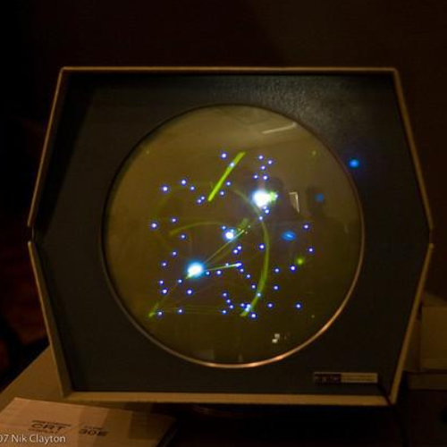

History/Background of Video Games. The first video game is a topic of debate and it depends on your definition of a video game. The “game” that started the whole thing was called the Cathode-Ray Tube Amusement Device. This was more of a simulation where the player would use knobs to adjust a missile's trajectory to try and hit targets that were placed on top of the screen. Another claim to being the first video game is Tennis for Two, being made in 1958 and run with a Brookhaven National Laboratory oscilloscope. It was made by William Higinbotham and was much more well-known, as well as expanded on the ideas and invention of CRT technology. One of the most well-known early video games was pong, this game earned its spot in the history books and has inspired many recreations and similar games.
